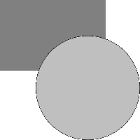
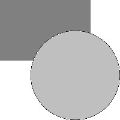

- Index
-
 ImageMagick Examples Preface and Index
ImageMagick Examples Preface and Index
-
Known and Fixed Bugs Index
Demonstrantion of a Semi-transparent white on transparent
black bug, found in ImageMagick 5.5.7 and earlier. They were
fixed during the ImageMagick version 6 development. The
background pattern on this page was choosen so that any
transparency would be visible in a web browser, that
understands PNG transparency (like Mozilla basied browsers).
This page is for reference for older IM users who may still
have to deal with this bug. The examples on this page have not
been re-created when/if the bug was fixed.
Generate an opaque rectangle
convert -size 200x200 xc:none -fill "#808080" \
-draw "rectangle 0,0 150,100" rectangle.png
|
and a white circle (Semi-Transparent Bug in -draw command
happens here)
convert -size 200x200 xc:none -fill "#FFFFFF" \
-draw "circle 125,125 73,73" circle_white.png
|
If the bug happened the you will see dark, near black,
edges to the pure white circle. Make it semi-transparent
convert circle_white.png -fill "#FFFFFF80" -opaque "#FFFFFF" circle.png
|
WARNING: This is not a
practical example of generating a semi-transparent white
circle, and should not be taken as a the best method to do
so. Overlay circle on rectangle (Semi-Transparency
Bug in overlays happens here)
composite circle.png rectangle.png alpha.png
|

If the bug happens here, the result should be that while
the overlays grey rectangle becomes a lighter color, the rest
of the semi-transparent white circle becomes grey in color,
instead of remaining unchanged. Overlay the above result onto a
white background, so we can see the result on browsers like IE.
composite alpha.png -size 200x200 xc:white result.png
|

The final result above should be a only a slight
whitening of the grey rectangle, where the circle overlaps.
Anywhere else and the white circle should disappear
(semi-transparent white on white gives white!).
If the bug is present you will see a grey circle instead,
and due to the presence of the bug in the "-draw"
command, the edges of the circle will appear even darker,
instead of shading into the white background.
Correct results with IM version 6
This is what the
above image should look like (generated with IM version 6)
NOTE: Due to the inaccurate way the white circle is made
semi-transparent (using "
-fill" and
"
-opaque") there is a thin almost white' border
between the dark rectangle and the overlayed circle. This is
not a bug, just incorrect image handling. If I had generated
the semi-transparent circle using this (more correct) command
instead (only valid in IMv6)...
convert circle_white.png -channel A -fx A/2 circle.png
|
Then we will not see the thin white border in the final
result.
{kind=link}
{kind=link}
{kind=link}
{kind=link}
{kind=link}
{kind=link}
{kind=link}